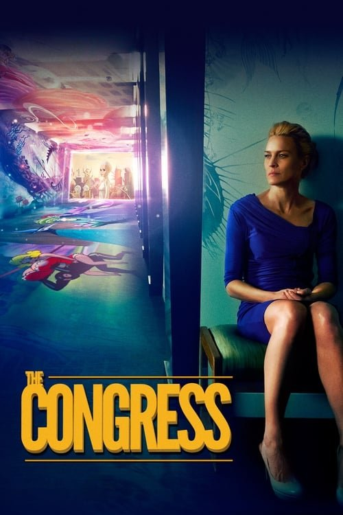

El congreso (2013)

Plataforma: Max
Puntuación IMDb: 6.8/10
Duración: 1h 41m
Género:
Sinopsis Rápida
Una actriz veterana recibe una extraña oferta: digitalizar su imagen para que pueda seguir actuando para siempre. ¿Qué sacrificios está dispuesta a hacer por la inmortalidad?
Sinopsis Detallada
El Congreso sigue a Robin Wright, una actriz en decadencia que recibe una propuesta de una empresa de animación para digitalizar su imagen. Luego de aceptar, se aventura en un mundo surrealista de animación que la lleva a reflexionar sobre la identidad, la realidad, y la naturaleza de la industria del cine. La película se destaca por su estilo visual distintivo, que mezcla la realidad con la animación.
¿Por qué tenés que verla?
- Una película experimental y visualmente cautivadora.
- La mezcla innovadora de live-action y animación.
- Plantea preguntas interesantes sobre la identidad y el futuro.
- Un viaje onírico e introspectivo.
Idea Extra
Análisis del simbolismo y las metáforas en la representación del mundo animado.
{{CONTENIDO_RELACIONADO}}